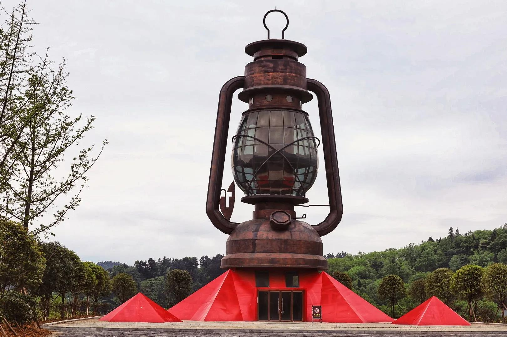
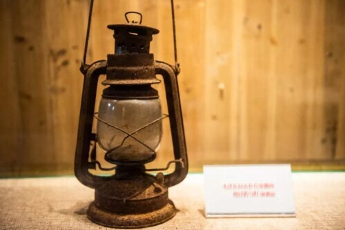

一盏马灯，一条小道，一个改变红军命运的夜晚。
苟坝村有一个红军马灯馆，陈列着30盏马灯，一盏盏造型各异，积淀着历史的风霜。80多年前，正是这样一盏马灯，见证了苟坝会议的关键一夜。
1935年3月10日夜，苟坝会议多数人主张进攻打鼓新场，毛泽东一人反对。深夜，他提着一盏马灯，沿田埂小道步行近两公里，找到周恩来陈述利弊，说服周恩来暂缓发令，并一起说服了朱德。次日会议复议，撤销进攻计划。
马灯馆的前言这样写道："马灯，照亮长征的路！不能忘却这一盏马灯！它照亮了漫漫长夜，指引了曲折的道路，见证了中国革命伟大诗篇的诞生。"
1. 毛泽东深夜提灯走的那条小道，连接的是哪两个人的住处？
2. 为什么一盏普通的马灯，后来会成为苟坝精神的象征？